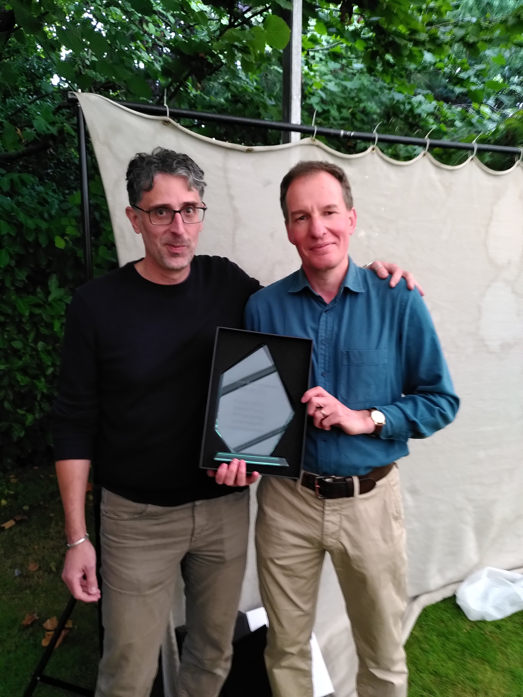
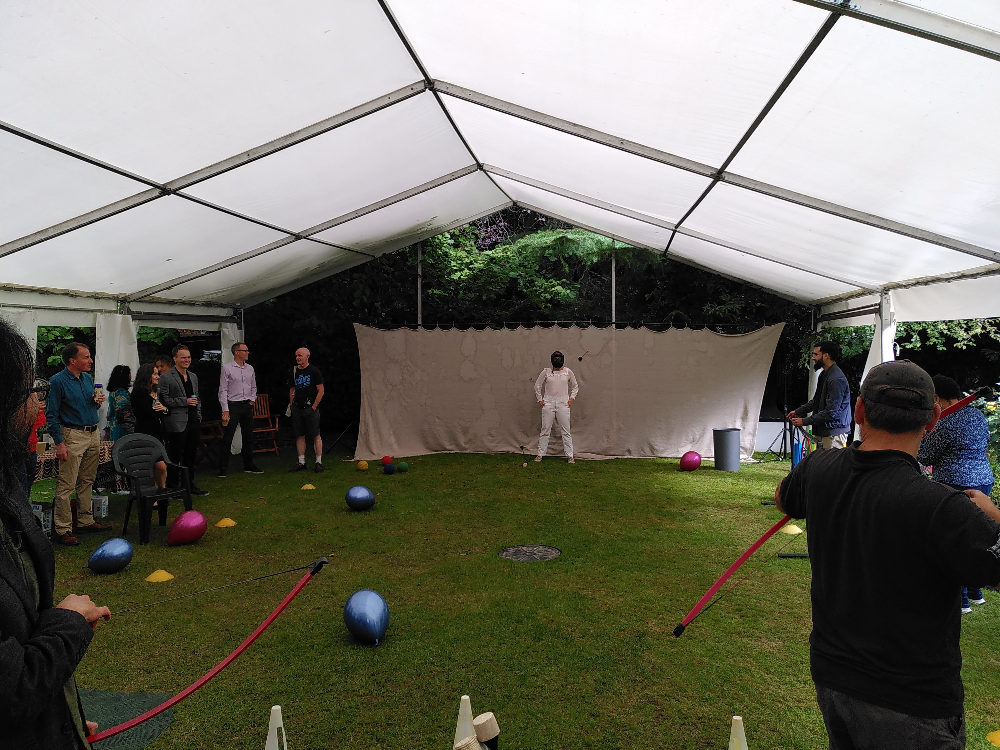
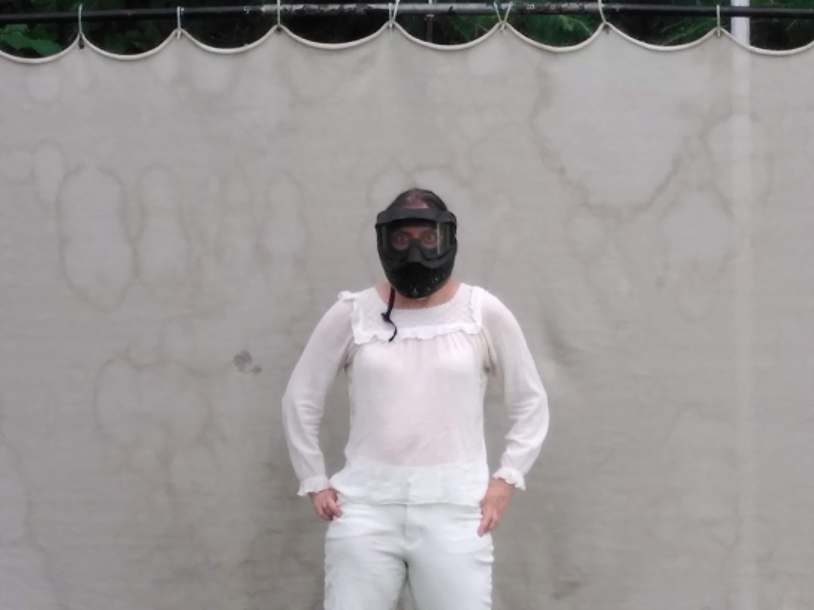

On Monday 20th September 2021, after a lengthy period of lockdown, the department organised an outdoor get-together in the gardens of the Freud Museum in London.
The event was organised for two reasons. Firstly, to remind each other of what we looked like in person – following around 18 months of online meetings – and to communally prepare for the new academic year. Secondly, to acknowledge a change at the top, as Professor Richard Chandler stepped down as head of department following his five-year tenure, to be replaced by the incoming Professor Gianluca Baio.
Professor Chandler oversaw many changes during his time at the helm. The past five years have been a period of expansion and relative success for the department, as the popularity of data science as a discipline has continued to grow.
But of course, a very significant part of his role was to lead the department through the pandemic. It was a period in which many difficult decisions had to be made in a very short space of time, amidst an ever-changing landscape of new government rules and recommendations. This meant employing different modes of teaching and modified expectations on how both staff and students should conduct themselves within the (at many times virtual) department.
Upon stepping down, Professor Chandler received a special departmental award, acknowledging his efforts in “guiding the department through a period of expansion and a global pandemic.”
Of course, another good reason for the meeting was to have some fun, and despite the provision of an emergency gazebo in case of rain, the sun shone brightly – a welcome reminder that Murphy’s law still carries with it some notion of uncertainty.
One of the highlights of the day was the soft archery session conducted by Discovery Archery Ltd. A special mention for bravery goes to Professor Codina Cotar, who volunteered herself without hesitation when the organisers asked if anyone was prepared to act as a human target. Students beware, Professor Cotar has nerves of steel!
Other shenanigans included a mime artist, a giant chess board and a carnival ‘test your strength’ machine, an activity that – funnily enough – no-one among the faculty seemed to be very adept at.


It was a great day, and served to mark the achievements of the departing Professor Chandler with high spirits and smiles all round.